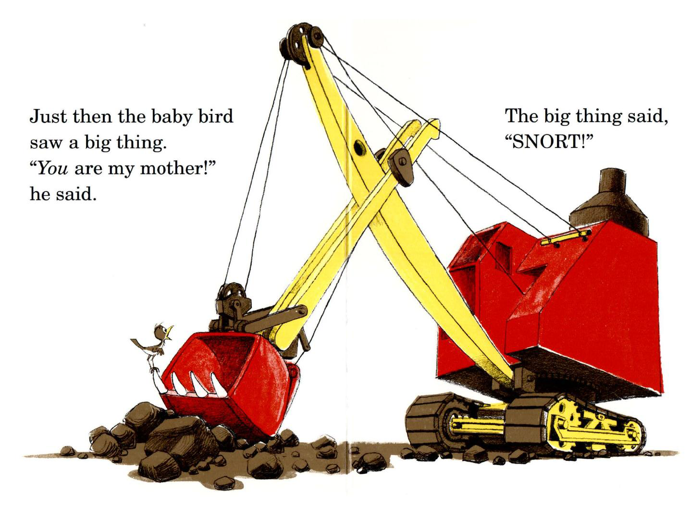
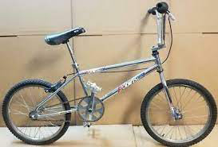
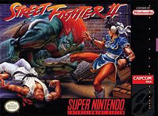
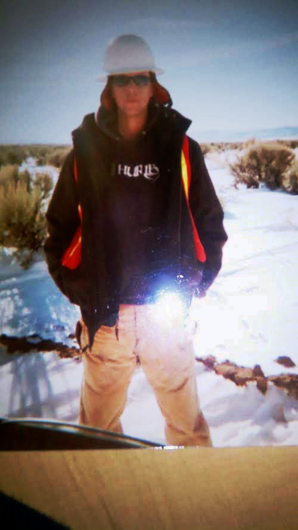
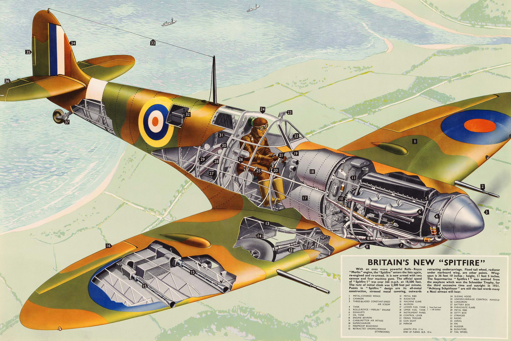

Welcome
Thanks for dropping by. My story is unique yet common in this great nation and world of ours. Like most of you out there I enjoy the good things in Life. We all search for contentment with a touch of happiness. Some of us enjoy being with God. Others have different beliefs, but most of us are very similar. These good things are usually simple in concept, but they must be sought daily. Much of what we seek is cliche to some, but real enough to everyone. Family, Love, Happiness etc.. This is about it. What fills out our individual journeys to attain these simple things becomes our definition. All though this definition is determined by Us through free will it is in my opinion predestined. Opinions should not determine your definition. As with everyhting in Life, not all simple concepts manifest so easily. Every last one of us fights for these simple things and it is a fight. Perhaps along the way we do the good works others need, regardless we Live. To Live your definition is to hit the universal record key. It is my hope that your definition as well as mine records along with it, honor, integerity, kindness, mercy and good faith.
Brief Life History
My childhhod was typical in most regards. My parents read to me at a young age. All the great titles. I in turn helped read to youngsters of some of those I've dated. Titles like: Are You My mother? - I always remember the illustration of a Bucyrus steam shovel: Dr Seuss - Dr Suess IS awesome! The illustrations and all his content were great! Never did anybody racially slur after being read Dr Seuss!.  Click the Image to read the book I did all those things childrden do. Dug holes in the dirt with spoons to make tunnels for my little hot wheels and so on. We went out in the wilderness and caught lizards, frogs and critters. All of our parents were great where we grew up. We were all middle class people, some of my friends had all the new brands some of us had one or two brand items. We all had good childhoods and those who lacked were only shamed by each other, but the adults typically made sure we enjoyed the better values of friendship despite economic circumstances. For example, if you couldnt afford to join AYSO someone else would help because we all wanted to play it. This type of thing was normal and not a big deal. Today its almost like to bad so sad look at my kid. We went camping often by ourselves, with our church and each other. For children independence is not understood fully, yet we had to have it. Rides to schhol were generally shunned until later years. To get to school we usually rode our bikes. All of us rode bicycles well into our teen years. We rode bikes without Helmets, I had a Robinson SST, I should have held on to it. In good condition they can fetch up to three thousand dollars!. I suppose they dont make em like they used to. Robinson in fact, isnt manufactured at all anymore.  Hard to believe they fetch that much money now. It was common for some of my friends to ride dirt bikes at over 70 MPH on dirt rodes under the age of twelve. I grew up in a suburb of Reno which was pretty safe. My generation, could go out alone with a .22 when we were 10 or twelve and there was no social media or cellular. Even as a teenager we had to call or walk to someones house to know if they were there. Often walking miles just to go find the gang. We also had Nintendo. The original! Mario Bros. At first this was a luxury and I remember the adults playing it first! Look this thing was crazy! Thats it though. Sega Genesis came out after a brief period. Later SNES wa launched in the U.S. Within the U.S. is an important detail. Within Japan there were different realease dates and systems. For instance their version of Nintendo was called Super Famicom and everything in the console world came fom Japan. Aside from Atari. I'm digresing a bit here. Unfortunately Atari dropped the ball twice. Whats worse is that both instances of failure came from the exact same problem. NEC suffered a similar failure and it was basically they're titles. You will have to look in to why their licensing became a problem, but basically people had theyre eyes on good titles already. The ppopular titles were in demand. NEC sold the Turbographics 16 [16 bit LOL!]. I owned a TG 16 and its CD peripheral which was state of the art for home consoles at that time. My Brother and I explored many games reluctantly for this conole. Many were actually pretty good like Exile and Sherlock Holmes. Unfortunately, the really fun games were made by different organizatiions, with few exceptions. I think Activision was able to pivot, but the way licensing was handeled left the TG-16, and the original Atari [after Pong, Missile Command and Asteroids were played out] left behind. After its release in America Sega survived and was the main competition thanks to good originals, marketing and offering all the high demand ttiles. Originals for Sega were Sonic the Hedgehog [we owned a Genneis and a 32X] and Flashback. Of course in Japan there were many great titles that never made it here. Most people could know what titles would hit which console via Magazines! Magazines are becoming a phenomenon. They are still published, but there demand is waning. We had numerous publications to choose from, the grocery store had a Magazine eisle and I lived in it. I even had subscriptions to EGM (Electronic Gaming Monthly), RC Modeler, Gamepro, Guns and Ammo, and it was cool to get the mail. The point being, gaming publications helped gamers anticipate what systems and titles could be had in the States. The only system that stood outside mainstream demand was the NEO GEO which cost nearly a rack back then. Their games werent cheap either. Neo survived because it was top notch hardware for a console. It was basically the high end boards and processors that powered many arcade titles. In fact, if I recall correctly they owned and or manufactured a few classic Arcade hits that werent cheesy, this kept them going. Aside from one major hit, the 64 bit consoles more or less sucked and it wasnt until Playstation came out that the industry got its mojo back. Before I get to the first major title that swept the industry, let me give you designers a couple seeds to water. Remaking classic titles could be really great. How about Metroid, Metroid could be a fantastic MMO RPG these days. Another clasic that could be redesigned thats a bit ominous is Missile Command. Totally rehash both titles. Missile command could be a full scale Global Thermanuclear War MMO simulator powered by A.I.. If the time were taken to really plan algorithims and AI so that its simulation capabilities presented thousands of different realistic results that would be a hit. Metroid could be manufactured a bit faster. The environment for Metroid could be rendered in 3D and provide endless play through changes and additions. Missile command though is a much more detailed vision to me. I envision the new Missile Command as if it were a pentagon scenario tool in terms of its sophisticated real world scenario mmodels. The shaders would lean towards the photorealism side akin to the new Flight Simulator. You would need to attain realistic intelligence on other nations capabilities without fervor and bias. Throw in a cameo by the WOPR and target both consoles and PCS. Thats just a tiny glimpse one could employ missile defenxse systems, phalanx types and interceptor missiles. U.S. Javelins old patriots and Russian s-4 and 500's; as well as hypersonic delivery systems would allow for an immersive sim. Enough of my whims lets get back to a once in a lifetime gaming title and move on.  We had arcade games in the 7-11. One day a game found itself tucked in a corner. A GAME CHANGER. The game: Street Fighter II. Now none of us had seen part I, but all of us would experience this game. This one arcade game revolutionized an entire World and industry. We lived on it for IDk a year, quarter after quarter. Some kids would rob their friends parents change to play the damn thing! Later this hit consoles and the demand was so great industries were revolutionized from this one game. To this day there are hits but none at such a crucial time of change to have such a sweeping effect. When not playing outside or in there were obligations hoist upon us by our parents. Many of us were made to go to Church. Most kids arent with going to church we wanted to play. However, many of us did go, our parents certainly did. This was part of a lot of our lives even children who did not go had parents who still maintained similar values. They may have not even lived by these values thereselves but they made sure we did! This is why for us it was a little different you could go around at this age and be very safe. Parents could count on each other and didnt have to worry like today. Today I will definately hit up a rope swing, cliff jump and play a game or two. I might drive slower at some point here. Well, I suppose under 80 at least. Oh yeah speedometers used to have a red marked 55mph on an analog steam guage, thus the song. Gas even at 18 years old was 99 cents a gallon even in high school peers were running 454's 383's 440's etc without worry. Tuners as well. These days due to many circumstances these activities dont seem to be as accessable. Make no mistake even the Hot girls were building Big Block Engines and Four wheel drives. Different Times for sure. There was the first Iraq War and Y2K, as far as World worry. After Y2K those Wild years were sprung upon me, that time when you still got time and you can drink 15 beers a day without batting an eye. Enjoy carefully young people, but enjoy it. These types of phrases were also cliche to us, but iuts true how quickly those young years get away from us all.
A Brief Work Experience Summary and My Path to Becoming a Developer
Most of my adult years were spent working skilled trades. When I say skilled trades that's exactly what I mean. Having plied numerous facets of building homes of all types, it became nearly second nature. Often very enjoyable. All tradesman have their preference. Many friends prefererred electrical work. Many are Electricians now, quite good ones I imagine too. A favorite? I'm not certain, I enjoyed a few spwcialty areas such as rain gutter, sheet metal, glass, mirrors, shower enclosures and windows. Windows werent always enjoyable. Maybe when it comes to rough in I would say Alarms Electronics and Systems were my favorite as well as the final installation of all the components. Central vacuums were great to plan out, depending on the home layout rough in wasnt so bad. I always enjoyed the fact that my vac rough ins contained almost no errors. Certainly no errors within critical areas. Of course anything that I did received the same attention to detail. Every Tradesman plies his/her work tthe same way. Then you have other types of skilled trades that can be called skilled Labor. Underground utility work and replacement to name a few. Never did I work on asphalt or road repair, but relacement of underground utilities have crossed my path. The simple truth is my resume is deluged with all kinds of skilled trades, skilled labor, logistics and mangement experience. Limiited hours in some heavy equipment and work on a natural gas pipeline are all items filling out the bullet list. In fact listing every thinig on a resume is so damn tedious I know longer do so. When someone shoots from the hip and tries whole heartedly to say I am a nerd for being a developer its meaningless. I usually cant help but wonder just what the hell they have actually done. For those in this line of work toaday bravo. If the industry were as budding as it had been circa 2006 more than likely I would be involved somewhere. If you are getting older and realize it may not be prudent to continue into old age know that you can pivot. Not only can you pivot but you have more real life experience to help you out along the way.
As I previously mentioned I have managed empoloyees crews and operations. Driving deliveries and customer service have all become valuable experience. What I call actual experience or 'Real world'. All of which can be applied at any time as an enhancement factor in all aspects of development and life in general. Well excluding writing. Everytime I try and speed up development by writing faster, the results dont always manifest the way I would like them to.
The Coding Genesis
I decided to learn how to code after constant layoffs in the skilled trades industry. As I previously stated, being laid off constantly, years ago became depressing to say the least. The layoffs and working out of town just got old real fast. Most of these layoffs came to fruition thanks to politics. Naturally, an endeavor that was on the back of my mind moved right up to the front and took precedent. This was roughly 5-7 years ago now. What I told myself was, hey why not learn something new while I'm laid off? All the while I figured I wouldn't be good at coding, so to actually try it couldn't hurt. For some reason I had this notion in mind that you had to be a mathematician to program. I once thought the same thinig about flying. Once I realized there are many different types of programming; and that one could learn quite readily, I began to take the plunge. Needless to say at first I was not that great at it and I had many doubts. Over time, my coding skills began to flourish and I very much enjoy designing user interfaces.
Progression
Many developers at some point become Full Stack Developers regardless of what they specialize in. It is almost un
avoidable.  Many skilled trades have apprenticeships and beginers. You might frame houses, but this does not mean you
cant sling some pipe. You may not be a plumber by daily routine and title but you can definately run the plumbing
through a house if need be. One is able to do this just from being in the industry, different facets thereof cross
paths. Of course, regardless of where you begin you progess to a Journeyman. Development is the same way. Wherever you
start ater a while you are going to experience and use many different types of stacks and Languages. Today my biggest enemy to
writing good code is my environment and general unease in the world. For what ever the reason, i always have to prove every tiny
little thing I do and that makes anybody lose interest. Until April Last year we were working with fifteen gbs of Bandwith per month, which is NOTHING!
The way stacks and packaging works today requires at least 1-120 gbs of Bandwith per month. Aside from these slight bumps
in the road, my skills improve daily. If I had my perfect little way, focusing completely on graphics languages wrapped in C is what
would focus on.
Many skilled trades have apprenticeships and beginers. You might frame houses, but this does not mean you
cant sling some pipe. You may not be a plumber by daily routine and title but you can definately run the plumbing
through a house if need be. One is able to do this just from being in the industry, different facets thereof cross
paths. Of course, regardless of where you begin you progess to a Journeyman. Development is the same way. Wherever you
start ater a while you are going to experience and use many different types of stacks and Languages. Today my biggest enemy to
writing good code is my environment and general unease in the world. For what ever the reason, i always have to prove every tiny
little thing I do and that makes anybody lose interest. Until April Last year we were working with fifteen gbs of Bandwith per month, which is NOTHING!
The way stacks and packaging works today requires at least 1-120 gbs of Bandwith per month. Aside from these slight bumps
in the road, my skills improve daily. If I had my perfect little way, focusing completely on graphics languages wrapped in C is what
would focus on.
Goals
As I get older by direction and my goals have become malleable. Most of those decisions come after much prayer. Right now the front end and UI is almost second nature. I started coding right as Responsive Web Design was being implemented. Cross Compatability had to be considered as well. Today I can not fathom why anyone could still be using IE 9. The three layers of presentation including javascript Restful are solid capabilites. Becoming more fluent in all languages and certifiaction are the big ticket items. Certificates have to be chosen carefully, and they dont do anything but silence critics. Well some critics. Employemnt is a goal but not a worry. Ladies and Gentelman many people claim to be able to develop websites and so on be careful. There is a HUGE difference between being able to model and write out your own CMS rather than changing a few links through a Wordpress backend dashboard. Computer science is vast and changes rapidly! There are some practices that never change. but they are few and far between. The Pepsi challenge doesnt bother me. Any developer worth their Salt can code right in front of you. Now I mean code not theme mods through a dashboard. I can write change and modify the darn dashboard that ships with a CMS such as Wordpress or Drupal. It is a huge advantage to work directly with a developer directly before we get swallowed by a conglomerate. All of this development has been learned to achieve a larger goal. This particular Goal I wont publish but it does require substantial funds. The purpose behind it is service to my King, not endless riches.Interests
My interests are pretty simple. Most important is keeping my sould balanced, this is also the hardest thing to do in life. These days I believe well rounded social circles are important, but this is difficult now. Many of us want others to check boxes including myself. There are some areas of life that I adhere to vehently. Aside from my valued ways my interests are matters that I attempt to fold into my Lords will. Those of you who have lived a while know that our ideas and goals dont always manifest. Usually they come to fruition in a manner we didnt see coming. Other times in life things happen the way we want them too. That being said lets get to a few interests of mine. Meeting others with different outlooks is an interest of mine to an extant. Hopefully, as I go through Life I meet interesting people. With people in this world pushing for War I think it is important to reach out to those you normally would not. We can all insulate and harden which probably will help lead to a broader confrontational set of circumstances. Time to get away is great and the outdoors are always an excellent place to enjoy. When I can it is nice to snowboard for sure, fish camp etc. I have tried fly fishing and I am not great at it yet. However, it is very different from using weighted lines. Weighted lines can be a beer drinking sport lets say. There are times when I lose patience and just reel the linde in. Fly fishing alleviates this idol time and can be fulfilling experience. Learning to cast is kinda were I'm at which is ok. These days I could always use more outdoor time. I really want some it has been to long since I have gone out fishing or snowboarding. Tinkering, is great and its become almost a bad habit. You name it, vehicles, computers all kinds of tinkering interests yours truly. Personal improvement on all levels touches all of my general whims, but I have to pry myself of the preverbial couch at times. My first Love is avaition. Its always been there. I would love to own a parachute and play with that. Learning how to climb rocks with cams, and pitons would be an experience. Rappelling is a blast if you can get bounds. Rappelling, is really fun, that too hasnt crossed my path for some time. Something wre can all do is Star gaze. Strangely many people frown at this. God interests me. Very much. These are just some of things I have done and some that I would like to do. Time is precious and a blessing. we only have so much time and I hope yours is quality and good my friends GodBless and Godspeed.